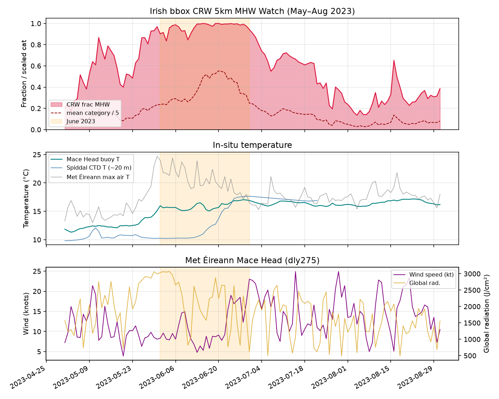
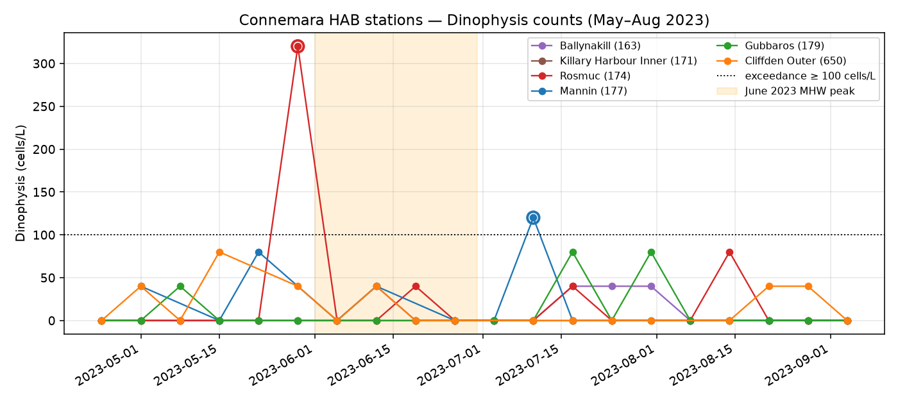
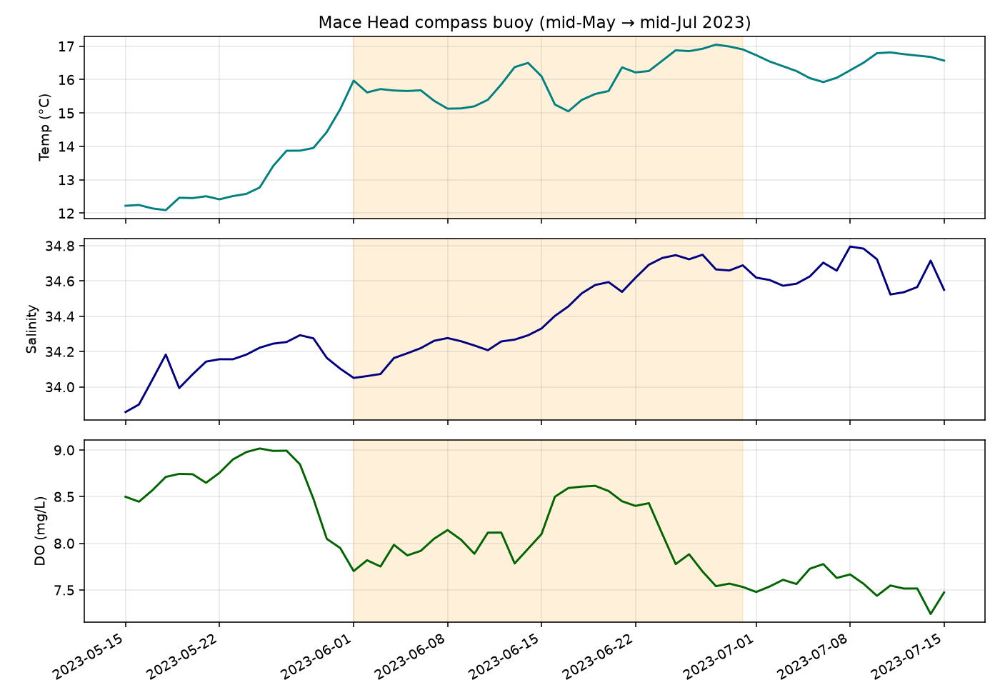

A plain-English walkthrough of PA-Marine-Model —
a research demo that ranks risky weeks for Dinophysis blooms
(the algae behind DSP shellfish closures) using sea-surface temperature.
Cork Ocean Hackathon · Challenge 4 · Research nowcast, not an official warning ·
GitHub
1. The problem
Along the Irish (and Scottish) coast, a microscopic alga called
Dinophysis can make shellfish unsafe. When counts rise,
harvesting areas get closed — costly for growers, and
hard to plan around.
Closures often arrive with little lead time. Seasonality helps a bit
(“summer is riskier”), but growers and regulators need something sharper
than a wall calendar: which weeks look unusually risky at
this bay, given the water temperature we’ve just seen?
Our question: at each monitoring station, will Dinophysis
exceed the alert level (≥ 100 cells per litre) in this week or the next?
2. How it works
Three ideas, no jargon needed:
Watch the sea surface. We pull daily sea-surface
temperature (SST) from public satellite data (NOAA OISST) and summarise
recent warmth — this week, the last few weeks, and how unusual that is
for the time of year (including marine heatwave context).
Learn from past blooms. We train a model on years of
Marine Institute HAB samples (train on older years, test on recent
ones) so it learns patterns that link temperature + place + season to
Dinophysis exceedances.
Score each station-week. The model outputs a risk score
for the current and next week. We compare it to a simple
“same week of year historically” baseline — the calendar — to check we
are actually adding value.
Technical note (once): we measure ranking quality with a score called
PR-AUC. In plain English it means better at ranking risky weeks
ahead of quiet ones. Higher is better; we always quote it against the
calendar baseline.
3. Proof — better than the calendar
On held-out recent Irish data (2022+), the model ranks risky Dinophysis
weeks better than “what usually happens this week of year”:
Ireland · Dinophysis cells
~0.29
vs calendar ~0.18
207 stations · modest but real lift
Ireland · harvest area closed
~0.32
vs calendar ~0.21
~0.46 when SST coverage is complete
Closure risk ranks about as well as the cell-count target from the same
temperature features — the euro-relevant early-warning head of the demo.
Scotland (optional context): the same approach also beats its local
calendar (~0.67 vs ~0.59), partly helped by more frequent positives there.
Full numbers and caveats live in
HACKATHON_DEMO.md
and the DSP / closure risk report.
4. June 2023 — a Connemara local story
June 2023 brought an exceptional northwest European shelf
marine heatwave (see Berthou et al., 2024). We zoom to
Irish waters and Connemara — not to claim the heatwave “caused” blooms,
but to show how the same datasets line up on one timeline.
Nearly the whole Irish box was in marine-heatwave conditions in June
(mean fraction in MHW ≈ 0.96; peaked at 1.0 on 19–20 June).
Mace Head buoy mean temperature ≈ 16 °C
in June (about 3.4 °C warmer than May).
Corrib outflow ran low — June mean ≈ 25 m³/s,
about 75% of the usual June average — consistent with
a dry, anticyclonic spell.
Dinophysis at focus stations: Rosmuc exceeded in the
week of 29 May (320 cells/L); Mannin
exceeded in the week of 10 July (120 cells/L) —
bookending the mid-June heatwave peak, not proving cause.

Irish-box marine heatwave fraction (top), Mace Head / Spiddal temperatures
(middle), and Mace Head wind + sunshine (bottom). Orange band = June 2023.
Same file also at
../data/processed/figures/june2023_mhw_met_temp.png.

Connemara Dinophysis time series — Rosmuc late-May spike and Mannin
mid-July exceedance around the heatwave window.

Mace Head buoy temperature, salinity, and dissolved oxygen through the
May–August 2023 window (~16 °C June mean T).
5. What a grower sees
Imagine a simple weekly glance — not a red-alert siren, just a ranked
heads-up beside the official monitoring programme:
Your bay · this Sunday’s score
Model compares recent sea temperature and season to past bloom weeks
at stations like yours, then places this week on a risk ladder.
Lower than usualWorth a closer lookRanks with past problem weeks
Always cross-check with Marine Institute HAB / biotoxin results.
This demo ranks risk; it does not open or close a harvest area.
6. Honest limits
We show the gaps on purpose — that is how you know what to trust:
Research demo, not an operational warning. Do not use
this alone for harvest decisions.
Skill is modest. Beating the calendar (~0.29 vs ~0.18
for Irish cells; ~0.32 vs ~0.21 for closures) is real, not dramatic.
DSP toxin weeks are too rare in the recent test window
to claim a reliable toxin model yet — closure risk is the stronger
ops-style head.
Extra data didn’t always help. Adding some ocean
“colour / mixing”, wind, or richer heatwave flags did not beat the
simple strong SST set; coarser inshore satellite pixels can miss
sheltered sites (e.g. Rosmuc SST often missing).
June 2023 is a story, not proof. Two exceedance weeks
around a heatwave do not equal causation. Local ROMS archive and
Lehanagh Pool data for that June were not available on public feeds.
HAB sampling is irregular — a quiet week on the map may simply mean
“no sample,” not “no cells.”